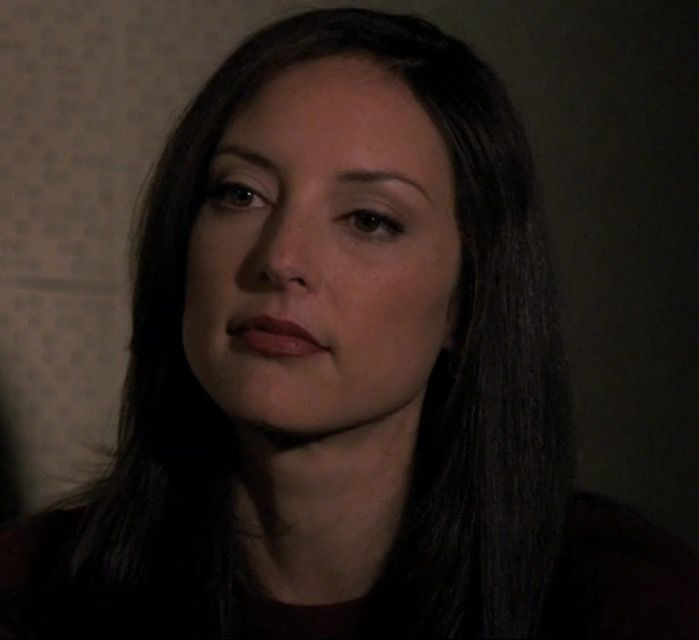

Elle Greenaway is another character in Criminal Minds and is one of the three women who are a part of the main BAU group. Although this is true, she is able to bond with the other members and becomes especially close with Derek Morgan. Her personality is quite closen and she is reluctant to tell the others when she is struggling especially with her PTSD from getting shot. This eventually leads to her emotional breakdown.
